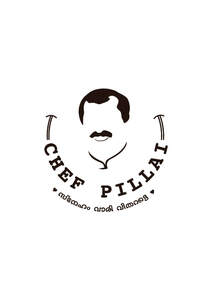

Trade Mark Journal No.2025/033 15 August 2025
UK00004231819 10 July 2025 (35,43)

- Class 35
- Restaurant management for others; Online ordering services in the field of restaurant take-out and delivery; On-line ordering services in the field of restaurant take-out and delivery; Business management of restaurants; Business advice relating to restaurant franchising; Business management of resort hotels; Hotel management service [for others].
- Class 43
- Carvery restaurant services; Sushi restaurant services; Hotel restaurant services; Take-out restaurant services; Bar and restaurant services; Restaurant and bar services; Japanese restaurant services; Take-away restaurant services; Salad bars [restaurant services]; Spanish restaurant services; Tempura restaurant services; Ramen restaurant services; Fast-food restaurant services; Carry-out restaurants; Restaurant services; Restaurants; Restaurant reservation services; Washoku restaurant services; Reservation of restaurants; Grill restaurants; Udon and soba restaurant services; Booking of restaurant seats; Serving food and drink for guests in restaurants; Serving food and drink in restaurants and bars; Fast food restaurants; Tourist restaurants; Provision of food and drink in restaurants; Delicatessens [restaurants]; Providing food and drink in restaurants and bars; Restaurant services for the provision of fast food; Food and drink catering; Catering of food and drink; Catering (Food and drink -); Mobile restaurant services; Catering of food and drinks; Providing food and drink for guests in restaurants; Eateries; Self-service restaurant services; Catering in fast-food cafeterias; Food and drink catering for banquets; Serving food and drink in doughnut shops; Restaurant services incorporating licensed bar facilities; Hotel reservations; Food and drink catering for institutions; Restaurant services provided by hotels; Bistro services; Reservation and booking services for restaurants and meals; Restaurants (Self-service -); Self-service restaurants; Serving food and drink in Internet cafes; Restaurant information services; Cocktail lounge buffets; Cafe services; Food and drink catering for cocktail parties; Take-away food and drink services; Providing food and drink in bistros; Providing restaurant services; Takeaway food and drink services; Making reservations and bookings for restaurants and meals; Hotel catering services; Providing food and drink in doughnut shops; Catering for the provision of food and drink; Take-away food services; Serving food and drinks; Resort hotel services; Serving food and drink for guests; Providing reviews of restaurants and bars; Takeaway food services; Reservation of hotel accommodation; Providing food and drink in Internet cafes; Tapas bars; Brasserie services; Agency services for reservation of restaurants; Hotel reservation services; Take-away fast food services; Hospitality services [food and drink]; Providing reviews of restaurants; Catering services for providing Japanese cuisine; Providing food and drink catering services for exhibition facilities; Providing room reservation and hotel reservation services; Catering services for providing Spanish cuisine; Consultancy services in the field of food and drink catering; Club services for the provision of food and drink; Providing food and drink catering services for fair and exhibition facilities; Corporate hospitality (provision of food and drink); Catering services for the provision of food and drink; Providing food and drink catering services for convention facilities; Catering for the provision of food and beverages; Outside catering; Providing hotel and motel services; Catering services for company cafeterias; Hotel accommodation reservation services; Night club services [provision of food]; Catering services for providing European-style cuisine; Hotel room booking services; Pizza parlors; Salad bars; Hotel services; Beer bar services; Resort hotels; Pubs; Snack bar services; Providing food and drink for guests.
RCP HOSPITALITY GROUP LTD